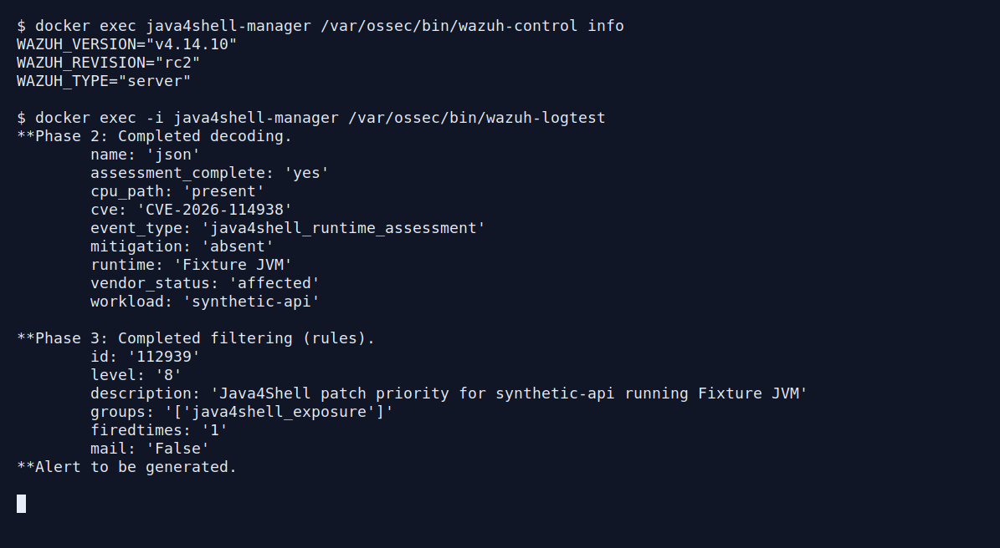
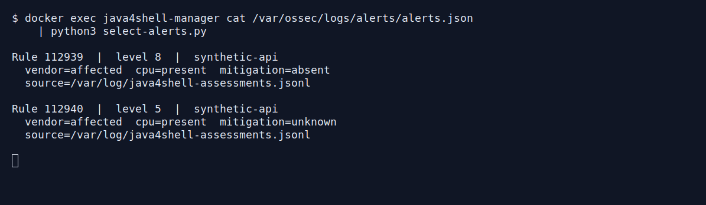

Finding Java4Shell patch priorities with Wazuh
Prioritize CVE-2026-114938 remediation from running JVM inventory and reproduce nine Wazuh Logtest cases.
The Java version in a package inventory and the Java version serving traffic can diverge. After an update, an old JVM may keep running until the service restarts. A container can also bring its own Java build. For Java4Shell, CVE-2026-114938, I built a Wazuh integration around the runtime serving the workload.
Java4Shell is a memory corruption flaw affecting a hardware-accelerated Base64 decoding path in OpenJDK. Red Hat describes the combination of an affected build, x86-64 with AVX-512 VBMI, and an application that decodes attacker-controlled input. Oracle's patch advisory gives product-specific affected builds, including an Oracle Java SE 8 performance build. I use the deployed vendor's advisory for each exact build because feature-version checks can miss exceptions and backports. Red Hat bulletin · Oracle patch advisory
Three observations per workload
I record the exact build of the running JVM and its vendor verdict, the CPU features visible in the workload environment, and whether the live process has an effective workaround. On a HotSpot JVM that permits attach, an operator can inspect the process with jcmd PID VM.version and jcmd PID VM.flags -all. Red Hat documents disabling Base64 intrinsics as a temporary workaround on applicable builds and also describes disabling AVX-512 on x86-64. Check vendor guidance before changing JVM flags. Red Hat bulletin
A small Python tool packages the observations into a JSON line for Wazuh's built-in decoder. Rule 112939 raises a level-8 alert when the vendor says the build is affected, the CPU prerequisites are present, and the workaround is absent. Rule 112940 raises a level-5 alert when the record lacks evidence and has no verified exclusion. Fixed builds, workloads without the required CPU path, and workloads with a verified workaround stay quiet in the replay. This lets the analyst route a patch task and an inventory follow-up to the right owners.
From alert to action
Start with affected services that process untrusted input. Patch through the runtime vendor, rebuild container images where appropriate, and roll out the fixed runtime. Run the assessment again after restart and confirm the running build. Keep that evidence in inventory because the Wazuh alert history will still show the earlier observation.
The alerts describe exposure prerequisites. App-specific reachability and incident evidence require their own investigation. If a JVM missed the inventory pass, the absence of an alert gives no information about its status. A reliable collection process matters as much as the rule.
Set it up step by step
You need a Wazuh 4.x manager, shell access with sudo, Git, and Python 3. Start on a test manager. In this walkthrough, the manager reads the JSON file locally, so you can verify the whole path without configuring an agent first.
1. Get the files and install the rules
git clone https://github.com/SAMsploit1/java4shell-wazuh.git
cd java4shell-wazuhHere is the complete rule file. The level-0 rule identifies this assessment by its event type and CVE. Its child rules use the values from the JSON record to distinguish patch priority from missing evidence. Before installing the file, search the manager’s custom rules for these IDs. A fresh setup should return no matches. If the search finds any, resolve the ID conflict before installing.
<group name="java4shell_exposure,">
<rule id="112938" level="0">
<decoded_as>json</decoded_as>
<field name="event_type" type="pcre2">^java4shell_runtime_assessment$</field>
<field name="cve" type="pcre2">^CVE-2026-114938$</field>
<description>Java4Shell runtime assessment</description>
</rule>
<rule id="112939" level="8">
<if_sid>112938</if_sid>
<field name="vendor_status" type="pcre2">^affected$</field>
<field name="cpu_path" type="pcre2">^present$</field>
<field name="mitigation" type="pcre2">^absent$</field>
<description>Java4Shell patch priority for $(workload) running $(runtime)</description>
</rule>
<rule id="112940" level="5">
<if_sid>112938</if_sid>
<field name="vendor_status" type="pcre2">^(affected|unknown)$</field>
<field name="cpu_path" type="pcre2">^(present|unknown)$</field>
<field name="mitigation" type="pcre2">^(absent|unknown)$</field>
<field name="assessment_complete" type="pcre2">^no$</field>
<description>Java4Shell assessment needs more evidence for $(workload)</description>
</rule>
</group>sudo grep -RE 'id="11293[89]"|id="112940"' /var/ossec/etc/rules/sudo install -m 0644 ruleset/rules/java4shell_rules.xml /var/ossec/etc/rules/java4shell_rules.xml2. Tell Wazuh where to read the JSON
sudo touch /var/log/java4shell-assessments.jsonl
sudo chmod 0640 /var/log/java4shell-assessments.jsonl
sudoedit /var/ossec/etc/ossec.confAdd the block below inside an existing <ossec_config> element. The file contains one JSON object per line. Wazuh already ships the json decoder, so this setup needs only the file input and custom rules. Leave the stock decoder files alone.
<localfile>
<location>/var/log/java4shell-assessments.jsonl</location>
<log_format>json</log_format>
</localfile>For reference, this is the stock decoder from ruleset/decoders/0006-json_decoders.xml on the lab manager. Its plugin extracts keys such as vendor_status and mitigation for the rules above.
<decoder name="json">
<prematch>^{\s*"</prematch>
<plugin_decoder>JSON_Decoder</plugin_decoder>
</decoder>sudo /var/ossec/bin/wazuh-analysisd -t
sudo /var/ossec/bin/wazuh-logcollector -t
sudo systemctl restart wazuh-manager
sudo systemctl status wazuh-manager --no-pagerRun the restart after both configuration checks succeed. If either reports an error, fix the file it names and rerun the check.
3. Replay a synthetic assessment in Logtest
Generate a sample from the repository directory and pipe it into the manager’s rule tester. The three options below supply fixture values. For real assessments, use the running build, workload CPU features, and verified mitigation described above.
python3 assess.py --workload synthetic-api --runtime 'Fixture JVM' \
--vendor-status affected --cpu-path present --mitigation absent |
sudo /var/ossec/bin/wazuh-logtestLook for name: 'json' in Phase 2 and rule 112939 at level 8 in Phase 3. Phase 2 shows what the decoder extracted. Phase 3 shows the rule decision for that event.

4. Send the event through the manager’s real log pipeline
Append a fresh sample after the service is running, then check the manager’s alert file. If Logcollector has just started, allow a few seconds for it to open the file and retry with a fresh event.
python3 assess.py --workload synthetic-api --runtime 'Fixture JVM' \
--vendor-status affected --cpu-path present --mitigation absent |
sudo tee -a /var/log/java4shell-assessments.jsonl >/dev/null
sudo grep -F '"id":"112939"' /var/ossec/logs/alerts/alerts.json | tail -n 1
Repeat with --mitigation unknown to look for rule 112940. Replay a record with --vendor-status fixed in Logtest to see the level-0 control. The full nine-case test runs with sudo python3 tests/replay.py.
5. Move collection to an agent when you are ready
Keep the rules on the manager. On the Linux agent that will receive assessments, repeat the file and <localfile> setup from step 2 in the agent’s own /var/ossec/etc/ossec.conf. Then run these commands on the agent.
sudo /var/ossec/bin/wazuh-logcollector -t
sudo systemctl restart wazuh-agentAppend a fresh synthetic record on the agent using step 4, then look for the alert on the manager. Confirm that the alert’s agent.name identifies your agent. Limit write access to the JSON file to your trusted inventory producer.
What the lab verified
On the Wazuh 4.14.10 manager (internal revision rc2), I appended three synthetic records to the monitored file. The manager wrote exactly two alerts: rule 112939 for the affected build without mitigation and rule 112940 for the affected build with unknown mitigation. The fixed-build control produced no alert. The separate Logtest suite passed all nine cases. The optional agent setup above still needs verification in your environment.
Logtest terminal transcript · Live manager alert summary · Nine-case replay results